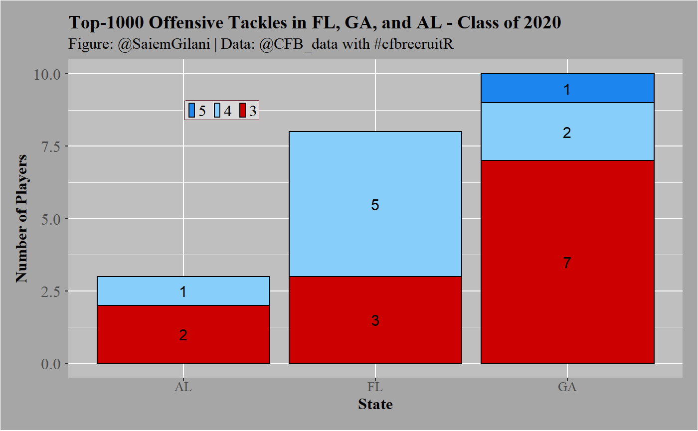

Let’s say that we are interested in seeing how many offensive tackles in the 2020 recruiting cycle were:
FL_OTs <- cfb_recruiting(2020, recruit_type = 'HighSchool', state='FL', position ='OT') GA_OTs <- cfb_recruiting(2020, recruit_type = 'HighSchool', state='GA', position ='OT') AL_OTs <- cfb_recruiting(2020, recruit_type = 'HighSchool', state='AL', position ='OT') SE_OTs <- rbind(FL_OTs, GA_OTs, AL_OTs) SE_OTs_1k <- SE_OTs %>% filter(ranking < 1000) %>% arrange(ranking) SE_OTs_1k %>% select(ranking, name, school, committedTo, position, height, weight, stars, rating, city, stateProvince) #> ranking name school committedTo #> 1 11 Broderick Jones Lithonia Georgia #> 2 37 Tate Ratledge Darlington School Georgia #> 3 72 Myles Hinton Greater Atlanta Christian School Stanford #> 4 108 Marcus Dumervil St. Thomas Aquinas LSU #> 5 127 Jalen Rivers Oakleaf Miami #> 6 156 Issiah Walker Jr. Norland Florida #> 7 270 Joshua Braun Suwannee Florida #> 8 317 Connor McLaughlin Jesuit Stanford #> 9 331 Javion Cohen Central Alabama #> 10 381 John Williams Creekview Clemson #> 11 487 Cayden Baker Fort Myers North Carolina #> 12 527 Austin Blaske South Effingham Georgia #> 13 535 Michael Rankins Lennard Georgia Tech #> 14 559 Jordan Williams Gainesville Georgia Tech #> 15 574 Brady Ward St. Paul's Episcopal Ole Miss #> 16 610 Trey Zimmerman Roswell North Carolina #> 17 654 Gerald Mincey Cardinal Gibbons Florida #> 18 748 Jake Wray Marietta Colorado #> 19 929 Joshua Jones Central Kentucky #> 20 948 Wing Green Lee County Georgia Tech #> 21 966 Kobe McAllister Heritage Cincinnati #> position height weight stars rating city stateProvince #> 1 OT 77.0 298 5 0.9947 Lithonia GA #> 2 OT 78.0 322 4 0.9822 Rome GA #> 3 OT 78.0 308 4 0.9666 Norcross GA #> 4 OT 77.0 305 4 0.9519 Fort Lauderdale FL #> 5 OT 78.0 331 4 0.9429 Orange Park FL #> 6 OT 76.0 309 4 0.9311 Miami FL #> 7 OT 78.0 335 4 0.9049 Live Oak FL #> 8 OT 79.0 260 4 0.8969 Tampa FL #> 9 OT 77.0 295 4 0.8954 Phenix City AL #> 10 OT 77.0 295 3 0.8891 Canton GA #> 11 OT 78.0 260 3 0.8789 Fort Myers FL #> 12 OT 77.0 278 3 0.8759 Guyton GA #> 13 OT 77.0 295 3 0.8755 Ruskin FL #> 14 OT 78.0 310 3 0.8742 Gainesville GA #> 15 OT 79.0 310 3 0.8729 Mobile AL #> 16 OT 78.0 294 3 0.8709 Roswell GA #> 17 OT 77.0 320 3 0.8681 Fort Lauderdale FL #> 18 OT 77.0 300 3 0.8643 Marietta GA #> 19 OT 76.5 304 3 0.8559 Phenix City AL #> 20 OT 79.0 285 3 0.8552 Leesburg GA #> 21 OT 78.0 275 3 0.8551 Ringgold GA
You can also create a plot:
SE_OTs_1k$stars <- factor(SE_OTs_1k$stars,levels = c(5,4,3,2)) SE_OTs_1k_grp <- SE_OTs_1k %>% group_by(stateProvince, stars) %>% summarize(players = n()) %>% ungroup() ggplot(SE_OTs_1k_grp ,aes(x = stateProvince, y = players, fill = factor(stars))) + geom_bar(stat = "identity",colour='black') + xlab("State") + ylab("Number of Players") + labs(title="Top-1000 Offensive Tackles in FL, GA, and AL - Class of 2020", subtitle="Figure: @SaiemGilani | Data: @CFB_data with #cfbrecruitR")+ geom_text(aes(label = players),size = 4, position = position_stack(vjust = 0.5))+ scale_fill_manual(values=c("dodgerblue2","lightskyblue","red3","ghostwhite"))+ theme(legend.title = element_blank(), legend.text = element_text(size = 12, margin=margin(t=0.2,r=0,b=0.2,l=-1.2,unit=c("mm")), family = "serif"), legend.background = element_rect(fill = "grey85"), legend.key.width = unit(.2,"cm"), legend.key.size = unit(.3,"cm"), legend.position = c(0.25, 0.84), legend.margin=margin(t = 0.4,b = 0.4,l=-1.2,r=0.4,unit=c('mm')), legend.direction = "horizontal", legend.box.background = element_rect(colour = "#500f1b"), axis.title.x = element_text(size = 12, margin = margin(0,0,1,0,unit=c("mm")), family = "serif",face="bold"), axis.text.x = element_text(size = 10, margin=margin(0,0,1,0,unit=c("mm")), family = "serif"), axis.title.y = element_text(size = 12, margin = margin(0,0,0,0,unit=c("mm")), family = "serif",face="bold"), axis.text.y = element_text(size = 12, margin = margin(1,1,1,1,unit=c("mm")), family = "serif"), plot.title = element_text(size = 14, margin = margin(t=0,r=0,b=1.5,l=0,unit=c("mm")), lineheight=-0.5, family = "serif",face="bold"), plot.subtitle = element_text(size = 12, margin = margin(t=0,r=0,b=2,l=0,unit=c("mm")), lineheight=-0.5, family = "serif"), plot.caption = element_text(size = 12, margin=margin(t=0,r=0,b=0,l=0,unit=c("mm")), lineheight=-0.5, family = "serif"), strip.text = element_text(size = 10, family = "serif",face="bold"), panel.background = element_rect(fill = "grey75"), plot.background = element_rect(fill = "grey65"), plot.margin=unit(c(top=0.4,right=0.4,bottom=0.4,left=0.4),"cm"))
